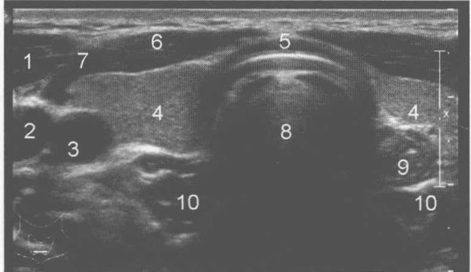
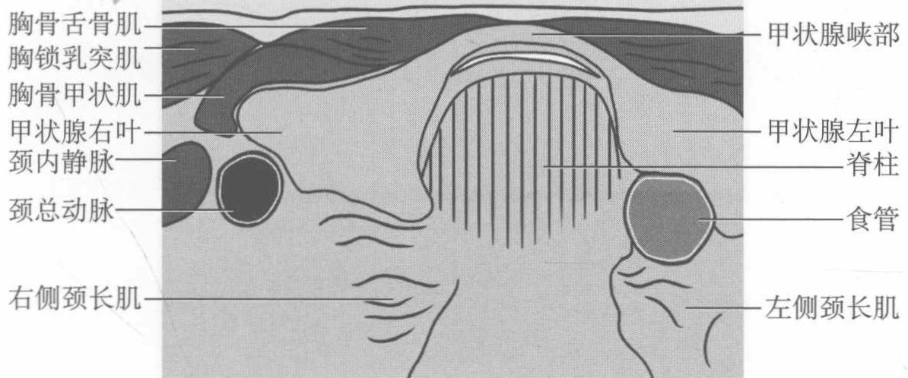
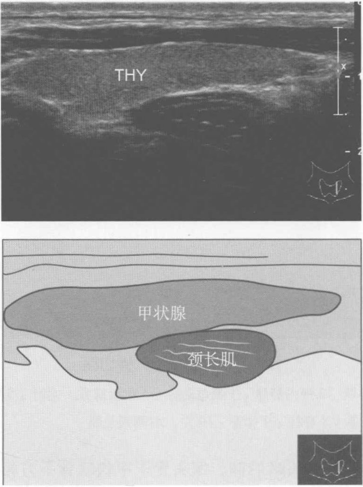
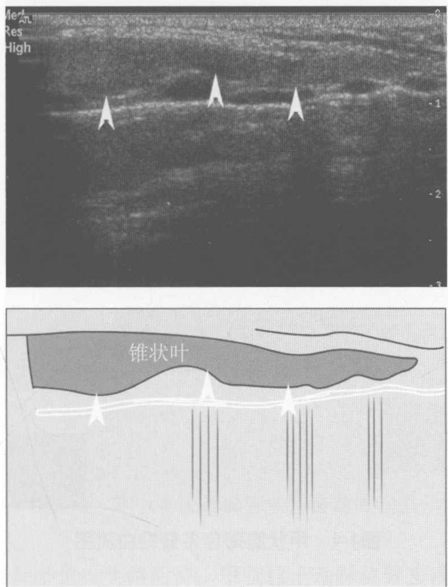
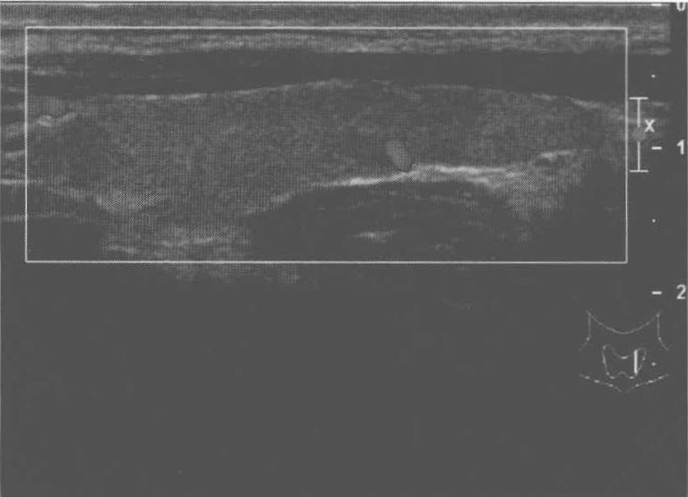
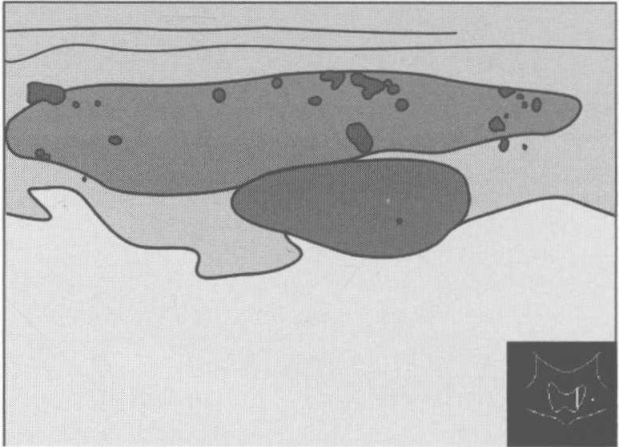
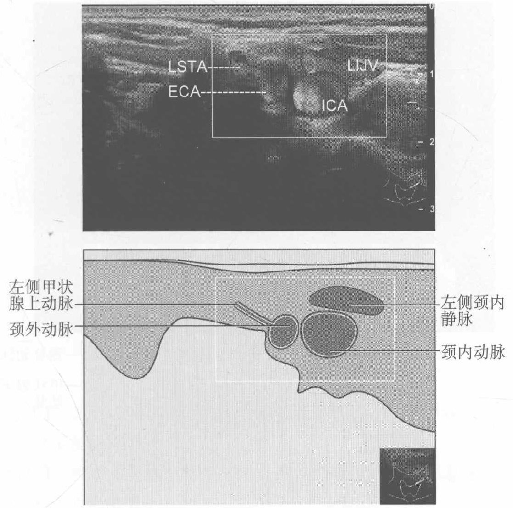
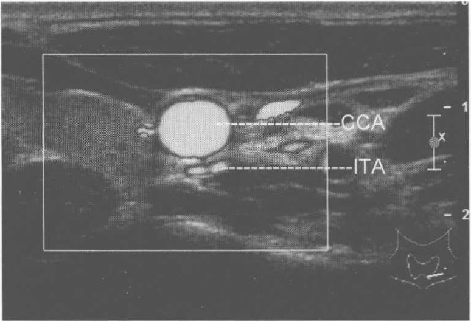
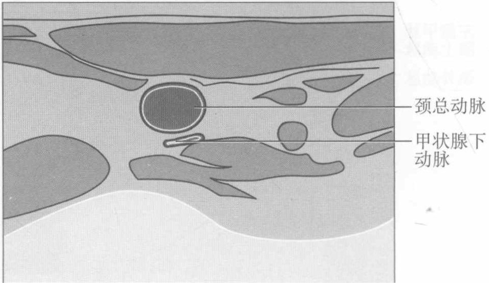
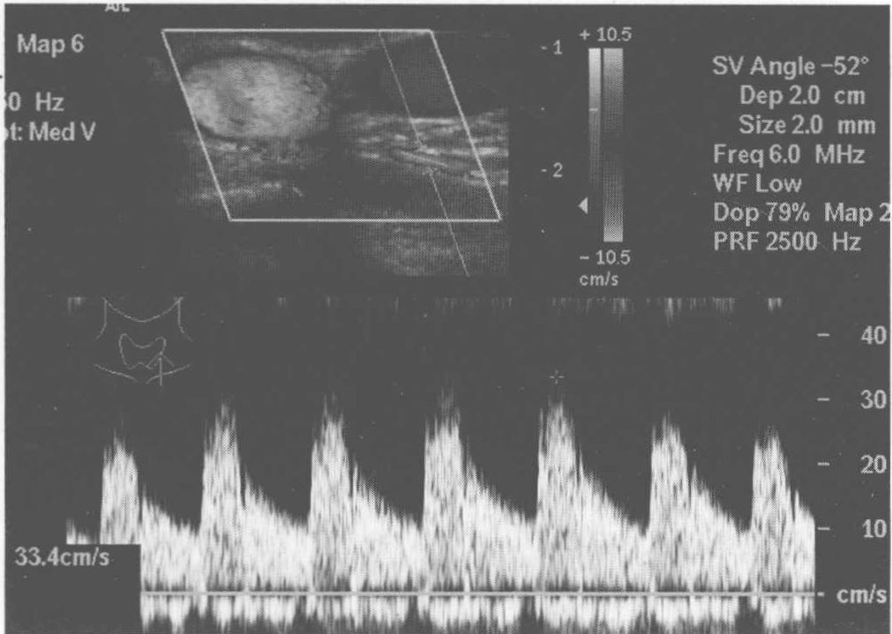

第4章 甲状腺
原书页 40–47 · 8 个页面区块 · 10 张配图。正文、图注与图片保持原书顺序。
| • CCA | common carotid artery | 颈总动脉 |
| • ECA | external carotid artery | 颈外动脉 |
| • ICA | internal carotid artery | 颈内动脉 |
| • ITA | inferior thyroid artery | 甲状腺下动脉 |
| • LIJV | left internal jugular vein | 左侧颈内静脉 |
| • LSTA | left superior thyroid artery | 左侧甲状腺上动脉 |
| • THY | thyroid | 甲状腺 |
一、 甲状腺最大横切面
甲状腺最大横切面见图4-1。


图4-1 甲状腺最大横切面
注：1. 胸锁乳突肌；2. 颈内静脉；3. 颈总动脉；4. 甲状腺左、右叶；5. 甲状腺峡部；6. 胸骨舌骨肌；7. 胸骨甲状肌；8. 脊柱；9. 食管；10. 左、右侧颈长肌
【扫查方法】 仰卧位，头略后仰。探头置于甲状软骨下方相当于第5～7颈椎水平，从上向下横切扫查。
【断面结构】 甲状腺及周围结构的横断面包括胸锁乳突肌、颈内静脉、颈总动脉、甲状腺左右叶、甲状腺峡部、胸骨舌骨肌、胸骨甲状肌、气管、食管、左右侧颈长肌。甲状腺实质呈中等回声，明显高于邻近的胸锁乳突肌回声，两侧叶背侧的正常甲状旁腺通常不显示。
【测量方法及正常值】取最大横切面测量两侧叶前后径和横径，测量峡部前后径。目前国内的正常参考值：横径<2cm。前后径<2cm。个别人横径可以达2.1～2.5cm。峡部前后径应<0.5cm。
【临床价值】 观察甲状腺大小、形态、边界、内部回声、有无结节，结节的个数、大小、边界内部回声、有无钙化、钙化类型、后壁回声。以同侧颌下腺回声为参照，判断甲状腺实质回声；判断结节回声高低时，以周围正常腺体回声作参照物。若侧叶前后径大于2cm，则可诊断甲状腺肿大。
二、 甲状腺纵切面
甲状腺纵切面见图4-2。

图4-2 甲状腺纵切面
【扫查方法】 取仰卧位，头略后仰。探头置于甲状软骨下方，在相当于第5～7颈椎水平，沿左右两侧叶纵切扫查。
【断面结构】纵切时甲状腺呈锥体状，上极较圆钝，下极较尖小。喉返神经为条状低回声，右侧喉返神经位于甲状腺右叶与颈长肌之间，左侧位于甲状腺左叶与食管之间。
【测量方法及正常值】取最大切面测量上、下径。用同样方法测量峡部上、
下径。甲状腺侧叶上下径正常值为4～6cm，峡部上下径为1.5～2.0cm。正常甲状腺大小有较大个体差异，高瘦者侧叶长径可达7～8cm，而矮胖者侧叶长径可＜5cm。
【临床价值】观察甲状腺大小、形态、边界、内部回声、有无结节及结节的性质。
三、 甲状腺锥状叶纵切面
甲状腺锥状叶纵切面见图 4-3。

图4-3 甲状腺锥状叶纵切面
注：箭头所指的结构为锥状叶
【扫查方法】无需特殊准备，取仰卧位，头略后仰。探头置于甲状软骨下方，在相当于第5～7颈椎水平。自峡部向上横切及纵切扫查。
【断面结构】腺体回声与甲状腺组织相同。横切时位于甲状腺峡部上方，纵切时呈狭窄扁条状，与峡部由较细部分相连。
【临床价值】该结构为甲状腺正常变异，一旦发现，不要误认为占位性病变。
四、 甲状腺彩色多普勒血流图
甲状腺彩色多普勒血流图见图4-4。


图4-4 甲状腺彩色多普勒血流图
【扫查方法】取仰卧位，头略后仰。探头置于甲状软骨下方，进行彩色多普勒超声探测。嘱患者尽可能不吞咽并保持浅呼吸，必要时屏气。检查者保持探头稳定，勿挤压甲状腺，以探头接触皮肤为宜，避免血流信号丢失。观察腺体内血流信号时，壁滤波和彩色速度范围应调至较低水平。
【断面结构】腺体内呈现稀疏分布的点状、条状血流信号。
【临床价值】观察甲状腺内血流分布；诊断弥漫性毒性甲状腺肿、甲状腺功能亢进症、各种甲状腺炎引起的血流信号增多。
五、 甲状腺上动脉彩色多普勒血流图
甲状腺上动脉彩色多普勒血流图见图4-5。

图4-5 甲状腺上动脉彩色多普勒血流图
【扫查方法】取仰卧位，头略后仰。甲状腺上动脉位置表浅，走行较直，容易显示。先横切颈总动脉，探头向上移动，在颈外动脉起始部寻找其第1分支即为甲状腺上动脉，然后顺动脉走行向内下方追踪观察。
【断面结构】颈内动脉、颈内静脉及颈外动脉的横断面，甲状腺上动脉纵断面。甲状腺上动脉为颈外动脉的第1分支，向内下方走行至甲状腺上极，然后分为前、后、内3支。
【测量方法及正常值】在刚从颈外动脉发出的部位测甲状腺上动脉内径。平均内径为2mm，收缩期峰值流速为30～50cm/s。
【临床价值】诊断弥漫性毒性甲状腺肿，监测甲状腺功能亢进症的治疗效果。
六、 甲状腺下动脉彩色多普勒血流图
甲状腺下动脉彩色多普勒血流图见图4-6。


图4-6 甲状腺下动脉彩色多普勒血流图
【扫查方法】取仰卧位，头略后仰。有两种方法显示甲状腺下动脉：①横切显示颈总动脉，先于其背侧找到一横行的动脉，即甲状腺下动脉，然后追踪观察其近段与远段。近段向外下方走行，与甲状颈干相连；远段向内下方走行，在甲状腺背侧分为上、下两支。②先于颈根部显示甲状颈干，其发出的甲状腺下动脉先向上行走，然后转向内侧从颈总动脉背侧穿过，进入甲状腺内。
【断面结构】甲状腺下动脉起自锁骨下动脉的分支甲状颈干，向上行走。
【测量方法及正常值】在颈总动脉后方测甲状腺下动脉内径，约2mm。
【临床价值】鉴别肿瘤来源于甲状腺或甲状旁腺；诊断弥漫性毒性甲状腺肿；监测甲状腺功能亢进症的治疗效果。
七、 甲状腺下动脉多普勒频谱血流图
甲状腺下动脉多普勒血流频谱图见图4-7。

图4-7 甲状腺下动脉多普勒频谱血流图
【断面结构】频谱多普勒呈低阻型单向搏动性频谱，收缩期急速上升，舒张期缓慢下降为低幅血流。
【测量方法及正常值】 甲状腺下动脉收缩期峰值流速为 30 ∼ 50 cm/s, RI < 0.7。
【扫查方法】无需特殊准备，取仰卧位，头略后仰。显示甲状腺下动脉，于分支前获取多普勒频谱。
【临床价值】诊断弥漫性毒性甲状腺肿，监测甲状腺功能亢进症的治疗效果。
（谭莉）